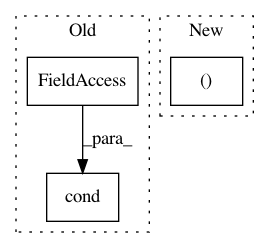

ee950b503eeed5aca3747a4bcf2a40f624b743a0,tensorforce/core/optimizers/synchronization.py,Synchronization,tf_step,#Synchronization#Any#Any#Any#,58
Before Change
sync_frequency = self.sync_frequency.value()
skip_sync = (time - self.last_sync < sync_frequency)
return self.cond(pred=skip_sync, true_fn=no_sync, false_fn=apply_sync)
After Change
deltas.append(delta)
return deltas
sync_frequency = self.sync_frequency.value()
skip_sync = (timestep - self.last_sync < sync_frequency)
return self.cond(pred=skip_sync, true_fn=no_sync, false_fn=apply_sync)
In pattern: SUPERPATTERN
Frequency: 3
Non-data size: 3
Instances
Project Name: reinforceio/tensorforce
Commit Name: ee950b503eeed5aca3747a4bcf2a40f624b743a0
Time: 2019-01-21
Author: alexkuhnle@t-online.de
File Name: tensorforce/core/optimizers/synchronization.py
Class Name: Synchronization
Method Name: tf_step
Project Name: calico/basenji
Commit Name: 98f1ff675ed44c1bf91a8482af8407a2f2c3c191
Time: 2020-01-01
Author: drk@calicolabs.com
File Name: basenji/layers.py
Class Name: StochasticReverseComplement
Method Name: call
Project Name: zsdonghao/text-to-image
Commit Name: d42df89c351e0c2a031ea3a9ae17fb7b844e7b79
Time: 2017-01-18
Author: dhsig552@163.com
File Name: tensorlayer/layers.py
Class Name: BatchNormLayer
Method Name: __init__